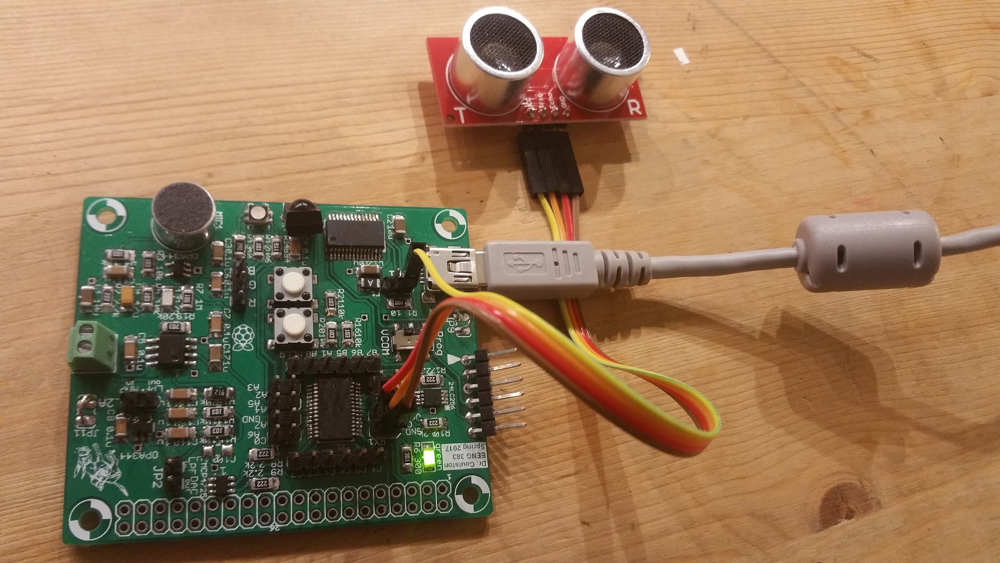
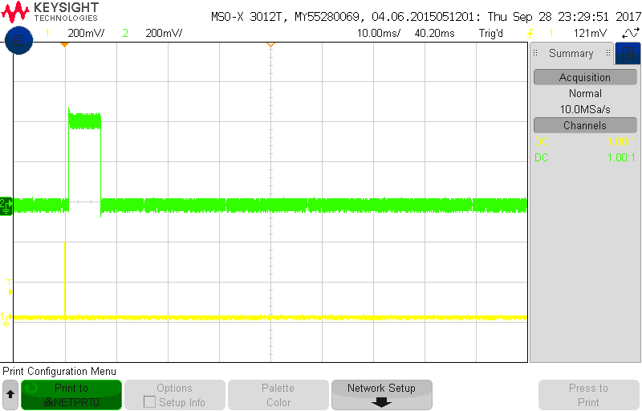

EENG 383
Ultrasonic Range FinderExternal Hardware
To answer the following questions you will need to consult the HCSR04 - Ultra-Sonic Ranging Module HC-SR04 Technical Specification. The speed of sound has some relationship to the elevation at which it is measured. Within a reasonable degree of accuracy, the speed of sound in Golden Colrado is 334 m/s. Use this value in your calculations.- Given a range of x centimeters from the ultrasonic sensor to an object, determine the duration of the echo pulse generated by the ultrasonic sensor in milliseconds. Remember that the acoustic pulse emitted by the ultrasonic sensor must travel out to the object and then reflect back to the sensor. The echo pulse is held high during the flight time (out and back) of this acoustic pulse. Use dimensional analysis and show your work for full credit.
- The working range of the ultrasonic sensor is 10cm to 500cm. Determine the duration of the echo pulse (in milliseconds) for an object placed at these two distances away from the ultrasonic sensor. Use dimensional anslysis and show your work for full credit.
- Assuming that we are measuring the duration of the echo pulse using a 16-bit timer, what is the smallest prescaler that can be used to measure the duration of the echo pulse.
- Given an echo pulse of x milliseconds generated by the ultrasonic sensor, determine the range (in centimeters) from the object to the ultrasonic sensor. Use dimensional analysis and show your work for full credit.
- Find the HC-SR04 - Ultra-Sonic Ranger technical documents found on the Digikey web site. Hint, search for "HC-SR04" on the Digikey web site. What is the minimum duration of the pulse on the trigger input?
Internal Subsystem
Discuss capture subsystem, rising and falling edge. Interrupt subsystem.- Given an echo pulse of duration x timer counts with the timer configured with a 1:8 prescaler, find the distance in centimeters to the object. Use dimensional analysis for full credit. Note, the constant relating timer counts to centimeters will be called the conversion factor. Let's say that you measured the duration of the echo pulse using a 1:8 prescaled timer and stored the number of timer counts in a variable called timerCounts. I want you to convert the timer counts into a distance (in centimeters) by multiplyng by the conversion factor determined in the previous problem. We will use 0.008 as the approximation in the following discussion, but you should use the true value determined in the previous problem. To summarize I would the equivlent of the following line of code in your program:
- Write a C-code snippet to convert timerCounts into distance in centimeters.
distanceInCm = 0.008 * timerCounts;
However since we are not allow to use floating point math on the PIC, we will need to find an alternative.
The idea will be to multiply the conversion factor by 216, mutiple the result with timerCounts and then divide by 216. In other words:
distanceInCm = ((216*0.008) * timerCounts)/216;
Since we are multiplying and then dividing by the same factor (216), the factors cancel leaving us with the same answer as if we had just multiplied by 0.008. However, the advantage is that the product 216*0.008 = 524 (rounded to nearest integer) which is easy to multiply by timerCounts using regular integer math. Then the division by 216 can be accomplished by shifting right by 16-bits using the C shift operation.
Firmware Organization
Build a project using the following MCC configuration:- In the INTERNAL OSCILLATOR area of the System Module window
- Oscillator Select: Internal oscillator block
- System Clock Select: FOSC
- Internal Clock: 16MHz_HFINTOSC
- Software PLL Enabled: Check
- In the Pin Manager: Grid [MCC] tab of the console window click on the open lock in the Port C 7 column and in the output row.
- In the Project Resources area of the project window, click "Pin Module". The editor window will change from the System Module to Pin Module. Click on the Custom Name text box in the RC7 row and change the name to "TRIG_PIN".
- If selected, unselect Analog and WPU.
- In the Device Resources area of the project window, expand the Timer option. Double click TMR0.
- In the Device Resources area of the project window, expand the EUSART option. Double click EUSART2.
- In the Device Resources area of the project window, expand the CCP option. Double click CCP4
- In the Device Resources area of the project window, expand the Timer option. Double click TMR1.
- In the Project Resources area of the project window, expand the
Peripherals option if not already expanded, and click on TMR0.
- Enable Timer: ✓
- Enable Prescaler: ✓
- Prescaler: 1:32
- Timer mode: 16-bit
- Clock Source: FOSC/4
- Enable Timer Interrupt: ✓
- Requested Period: 120ms
- In the Project Resources area of the project window click on EUSART2.
- Enable EUSART: ✓
- Enable Transmit: ✓
- Enable Wake-up: □
- Auto-Baud Detection: □
- Enable Address Detect: □
- Baud Rate: 9600
- Tranmission Bits: 8-bit
- Reception Bits: 8-bit
- Clock Polarity: async_noninverted_sync_fallingedge
- Enable Continous Receive: ✓
- Enable EUSART Interuupts: □
- Redirect STDIO to USART ✓
- In the Project Resources area of the project window click on CCP4.
- ECCP mode: Capture
- Capture Timer Select: Timer1
- Capture mode: Every rising edge
- Enable CCP interrupt: □
- In the Project Resources area of the project window click on TMR1.
- Enable Timer: ✓
- Clock Source: FOSC/4
- Prescaler: 1:8
- Enable Synchronization: ✓
- Timer Period: 32.768 ms
- Period count: 0xFFFF

Let's examine the structure of the firmware before moving on with this lab. In the Project area of the project window, expand the Source File folder then expand the MCC Generated Files folder.
- Open the MCC generated file interrupt_manager.c, what function is called when timer 0 is enabled and when timer 0 has rolled over?
- At the start of main the function "SYSTEM_Initialize" is called. Look through the MCC generated files to find this function. What file is this function call defined in and list the initialization functions that SYSTEM_Initialize function calls.
- Look through the MCC generated files to find the TMR0_SetInterruptHandler
function. The argument to TMR0_SetInterruptHandler is a function
pointer; that is the name of a function! In the body of
TMR0_SetInterruptHandler the function passed into the TMR0_SetInterruptHandler
function is aliased to "TMR0_InterruptHandler." So if you called
"TMR0_SetInterruptHandler(pugs);" where pugs was a subroutine that you
defined (say in your main.c file), then a call to TMR0_InterruptHandler();
would call the pugs function.
Find the TMR0_Initialize function, what is the name of the function that is passed into the TMR0_SetInterruptHandler function? In what source file is this function defined? What does this function do?
- If MCC is not open, in the Project tab of the project management window open the Important Files folder and double clicl on the mc3 file. After MCC opens,
- click on the Resources tab in the project management window. In the Project Resources area open Peripherals selection and select TMR0,
- Change the "Requested Period" field to 100ms,
- Save the configuration: File → Save All,
- Click Generate in the Project Resources area of the project management window,
- You should see the the following merge window.

- Clicking on the blue insert arrow will move the new changes you made in the configuration to the MCC generated file, tmr0.c. In this case we want to move the new initial timer 0 value into tmr0.c so that the timer interupts every 100ms instead of 120ms.
- Looking that the scroll bar to the right of the Merge Result subwindow
shows that there is one red merge, scroll down to that difference. You
should see the following:

- This difference is telling us that MCC wants to add an (empty) declaration for the TMR0_DefaultInterruptHandler function. However, in a previous step we moved that function into main so that we could more easily edit it. Because you cannot have two definitions for a function, we will reject this suggested modification. To do this simply ignore the suggestion by not clicking on the blue arrow.
- Save the changes to tmr0.c by clicking File → Save All
- Close the difference checking tool by clicking on the x in the merge tab.
Firmware Experiments
Lay a 30 centimeter-long piece of tape down on the lab bench. Mark off 2 cm intervals along the length of the tape. Place the ultrasonic range finder transducer along the 0 cm mark. You will be placing a solid hard surface along the length of the tape so that the ultrasonic acoustic pulse better reflect.- Capture an echo pulse with a hard reflective object placed at 20cm away from the ultrasonic range finder. To do this setup the oscilloscope as follows:
- Connect a proper oscilloscope probe to channel 1 of the oscilloscope,
- Connect the ground clip of the oscilloscope probe to the ground loop on your Dev'17 board,
- Connect the oscilloscope channel 1 probe to the ultrasoncic range finder right-angle header pin labeled "Trig",
- Set the vertical scale for channel 1 to 1 volts per division by adjusting the large, leftmost vertical knob to 1.00V/division,
- Move the channel 1 ground reference to the second lowest reticule on the lower half screen by adjusting the small channel 1 vertical knob,
- Connect the oscilloscope channel 2 probe to the range finder right- angle header pin labeled "Echo",
- Set the vertical scale for channel 2 to 1 volts per division by adjusting the large, leftmost vertical knob to 1.00V/division,
- Move the channel 2 ground reference to the second lowest reticule on the upper half screen by adjusting the small channel 2 vertical knob,
- Set the horziontal scale to 2.5 ms per division by adjusting the large horziontal knob to 2.5 ms/division,
- Move the horizontal trigger reference to the second leftmost reticule, by adjusting the small horziontal knob so that orange indicator at the top of the screen is centered on the second leftmost reticlem
- Set trigger mode to “auto”
Keysight: Mode/Coupling → Mode → Auto
Agilent: Mode/Coupling → Mode → Auto - Trigger on rising edge of channel 1,
Keysight: Trigger → Trigger Type → Edge
Keysight: Trigger → Source → 1
Keysight: Trigger → Slope → ↑ (rising)
Agilent: Trigger → Edge → Source → 1
Agilent: Trigger → Edge → Slope → ↑ (Rising) - Set the trigger level between 1-2v by adjusting small trigger knob so that "T" is around 1.5v above the ground symbol,
- You should see a waveform similar to the one below. The waveform
may flicker. In order to remove this you need to switch the oscilloscope
trigger from auto to normal mode.
Keysight: Mode/Coupling → Mode → Normal
Agilent: Mode/Coupling → Mode → Normal
- Clear all menus off the bottom of the screen
Keysight: ↑ Back - Save the image on the screen
Keysight: Save/Recall → Save → Format → 24-bit Bitmap image (*.bmp)
Keysight: Save/Recall → Save → Press to Save
Agilent: Save/Recall → Save → Format → 24-bit Bitmap image (*.bmp)
Agilent: Quick Print

- Include the screenshot from the waveform save on your oscilloscope when an object is placed about 1 meter away.
- Using the time per division information on the oscilloscope screen
and the duration the waveform (described in divisions), show your
calculation for the period of the waveform on the echo line by multiplying
the time division setting by the number of division of the echo pulse.
For example, if your oscilloscope was set to 20ms/division and the
waveform had a duration of 4.6 divisions, then your answer would look
like:
Oscilloscope set to 20ms/division The duration of the waveform is 4.6 divisions 20ms -------- * 4.6 divisions = 92ms division
- Modify the convertEchoToCm function using your conversion math from a previous answer. Show the complete function as your answer.
- Complete the table below by placing a hard reflective object at the
distance given in the "Actual distance" column. Follow the following
instructions to complete the remaining columns in the table.
- Measure the duration of the echo pulse (in timer counts using the "s") and enter it into the "Echo duration" column below.
- Use your answer to questions above to convert the Echo counts into distances (in cm). For each echo count, enter the corresponding distance (to 3 significnt figures) into the "Calculated distance" column below.
- For each row in the table below, compute the % error between the actual distance of the object and calculated distance in the "Calculated distance (cm)" column and enter it in the "% error" column.
- Finally record the distance reported by the convertEchoToCm function statement in the column "convertEchoToCm".
Actual distance Echo duration (counts) Calculated distance (cm) % error convertEchoToCm distance 10 cm 20 cm 30 cm 40 cm 50 cm